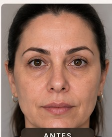
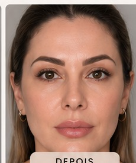
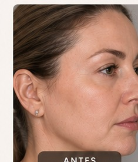
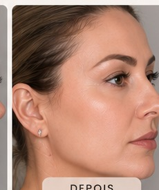
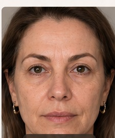
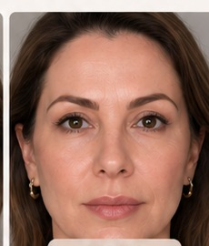

Avaliação personalizada
Entendemos suas características, objetivos e expectativas antes de definir a estratégia.
BELEZA REAL, EM CADA FASE DA SUA VIDA
Um protocolo exclusivo para mulheres que querem voltar a se reconhecer no espelho, com naturalidade, harmonia e segurança.
UM OLHAR DIFERENTE PARA A SUA BELEZA
Uma abordagem personalizada que busca valorizar a beleza individual sem apagar a identidade de cada mulher.
Entendemos suas características, objetivos e expectativas antes de definir a estratégia.
Um plano pensado para respeitar suas proporções e entregar harmonia ao rosto.
Você recebe orientação e acompanhamento durante cada etapa do processo.
RESULTADOS QUE TRANSFORMAM

ANTES
DEPOIS
ANTES
DEPOIS
ANTES
DEPOIS* Imagens geradas para demonstração visual do layout. Não representam pacientes reais nem resultados clínicos reais. Substituir por fotos autorizadas pela clínica antes da publicação.
SUA MELHOR VERSÃO
EM QUALQUER IDADE
Aqui, cada atendimento é único. O foco está em escutar, planejar e construir uma experiência que respeite sua individualidade.
Falar com a equipeDÚVIDAS FREQUENTES
É um protocolo de atendimento estético personalizado, planejado de acordo com as características e objetivos de cada paciente.
A indicação depende de uma avaliação individual. Agende uma conversa para entender se o protocolo faz sentido para você.
O planejamento busca preservar a identidade e a harmonia facial, sempre respeitando as características individuais.
Clique em qualquer botão de WhatsApp desta página para falar diretamente com a equipe.
Estou aqui para ajudar você a encontrar o melhor caminho para sua beleza e bem-estar.